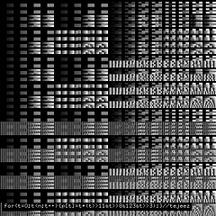

Lately,
there has been a lot of experimentation with very short programs that
synthesize something that sounds like music. I now want to share some
information and thoughts about these experiments.
First, some background. On 2011-09-26, I released the following video on Youtube, presenting seven programs and their musical output:
This video gathered a lot of interest, inspiring many programmers to experiment on their own and share their findings. This was further boosted by Bemmu's on-line Javascript utility that made it easy for anyone (even non-programmers, I guess) to jump in the bandwagon. In just a couple of days, people had found so many new formulas that I just had to release another video to show them off.
Edit 2011-10-10: note that there's now a third video as well! http://www.youtube.com/watch?v=tCRPUv8V22o
It all started a couple of months ago, when I encountered a 23-byte C-64 demo, Wallflower by 4mat of Ate Bit, that was like nothing I had ever seen on that size class on any platform. Glitchy, yes, but it had a musical structure that vastly outgrew its size. I started to experiment on my own and came up with a 16-byte VIC-20 program whose musical output totally blew my mind. My earlier blog post, "The 16-byte frontier", reports these findings and speculates why they work.
Some time later, I resumed the experimentation with a slightly more scientific mindset. In order to better understand what was going on, I needed a simpler and "purer" environment. Something that lacked the arbitrary quirks and hidden complexities of 8-bit soundchips and processors. I chose to experiment with short C programs that dump raw PCM audio data. I had written tiny "/dev/dsp softsynths" before, and I had even had one in my email/usenet signature in the late 1990s. However, the programs I would now be experimenting with would be shorter and less planned than my previous ones.
I chose to replicate the essentials of my earlier 8-bit experiments: a wave generator whose pitch is controlled by a function consisting of shifts and logical operators. The simplest waveform for /dev/dsp programs is sawtooth. A simple for(;;)putchar(t++) generates a sawtooth wave with a cycle length of 256 bytes, resulting in a frequency of 31.25 Hz when using the the default sample rate of 8000 Hz. The pitch can be changed with multiplication. t++*2 is an octave higher, t++*3 goes up by 7 semitones from there, t++*(t>>8) produces a rising sound. After a couple of trials, I came up with something that I wanted to share on an IRC channel:
main(t){for(t=0;;t++)putchar(t*(((t>>12)|(t>>8))&(63&(t>>4))));}
In just over an hour, Visy and Tejeez had contributed six more programs on the channel, mostly varying the constants and changing some parts of the function. On the following day, Visy shared our discoveries on Google+. I reshared them. A surprising flood of interested comments came up. Some people wanted to hear an MP3 rendering, so I produced one. All these reactions eventually led me to release the MP3 rendering on Youtube with some accompanying text screens. (In case you are wondering, I generated the screens with an old piece of code that simulates a non-existing text mode device, so it's just as "fakebit" as the sounds are).
When the first video was released, I was still unsure whether it would be possible for one line of C code to reach the sophistication of the earlier 8-bit experiments. Simultaneities, percussions, where are they? It would also have been great to find nice basslines and progressions as well, as those would be useful for tiny demoscene productions.
At some point of time, some people noticed that by getting rid of the t* part altogether and just applying logical operators on shifted time values one could get percussion patterns as well as some harmonies. Even a formula as simple as t&t>>8, an aural corollary of "munching squares", has interesting harmonic properties. Some small features can be made loud by adding a constant to the output. A simple logical operator is enough for combining two good-sounding formulas together (often with interesting artifacts that add to the richness of the sound). All this provided material for the "second iteration" video.
If the experimentation continues at this pace, it won't take many weeks until we have found the grail: a very short program, maybe even shorter than a Spotify link, that synthesizes all the elements commonly associated with a pop song: rhythm, melody, bassline, harmonic progression, macrostructure. Perhaps even something that sounds a little bit like vocals? We'll see.
Hasn't this been done before?
We've
had the technology for all this for decades. People have been building
musical circuits that operate on digital logic, creating short pieces of
software that output music, experimenting with chaotic audiovisual
programs and trying out various algorithms for musical composition.
Mathematical theory of music has a history of over two millennia. Based
on this, I find it quite mind-boggling that I have never before
encountered anything similar to our discoveries despite my very long
interest in computing and algorithmic sound synthesis. I've made some
Google Scholar searches for related papers but haven't find anything.
Still, I'm quite sure that at many individuals have come up with these
formulas before, but, for some reason, their discoveries remained in
obscurity.
Maybe
it's just about technological mismatch: to builders of digital musical
circuits, things like LFSRs may have been more appealing than very wide
sequential counters. In the early days of the microcomputer, there was
already enough RAM available to hold some musical structure, so there
was never a real urge to simulate it with simple logic. Or maybe it's
about the problems of an avant-garde mindset: if you're someone who
likes to experiment with random circuit configurations or strange
bit-shifting formulas, you're likely someone who has learned to
appreciate the glitch esthetics and never really wants to go far beyond
that.
Demoscene
is in a special position here, as technological mismatch is irrelevant
there. In the era of gigabytes and terabytes, demoscene coders are
exploring the potential of ever shorter program sizes. And despite this,
the sense of esthetics is more traditional than with circuit-benders
and avant-garde artists. The hack value of a tiny softsynth depends on
how much its output resembles "real, big music" such as Italo disco.
The
softsynths used in the 4-kilobyte size class are still quite
engineered. They often use tight code to simulate the construction of an
analog synthesizer controlled by a stored sequence of musical events.
However, as 256 bytes is becoming the new 4K, there has been ever more
need to play decent music in the 256-byte size class. It is still
possible to follow the constructivist approach in this size class -- for
example, I've coded some simple 128-byte players for the VIC-20 when I
had very little memory left. However, since the recent findings suggest
that an approach with a lot of random experimentation may give better
results than deterministic hacking, people have been competing in
finding more and more impressive musical formulas. Perhaps all this was
something that just had to come out of the demoscene and nowhere else.
Something
I particularly like in this "movement" is its immediate, hands-on
collaborative nature, with people sharing the source code of their
findings and basing their own experimentation on other people's efforts.
Anyone can participate in it and discover new, mind-boggling stuff,
even with very little programming expertise. I don't know how long this
exploration phase is going to last, but things like this might be useful
for a "Pan-Hacker movement" that advocates hands-on hard-core hacking to greater masses. I definitely want to see more projects like this.
How profound is this?
Apart
from some deterministic efforts that quickly bloat the code up to
hundreds of source-code characters, the exploration process so far has
been mostly trial-and-error. Some trial-and-error experimenters,
however, seem to have been gradually developing an intuitive sense of
what kind of formulas can serve as ingredients for something greater.
Perhaps, at some time in the future, someone will release some
enlightening mathematical and music-theoretical analysis that will
explain why and how our algorithms work.
It
already seems apparent, however, that stuff like this stuff works in
contexts far beyond PCM audio. The earlier 8-bit experiments, such as
the C-64 Wallflower, quite blindly write values to sound and video chip
registers and still manage to produce interesting output. Media artist
Kyle McDonald has rendered the first bunch of sounds into monochrome bitmaps
that show an interesting, "glitchy" structure. Usually, music looks
quite bad when rendered as bitmaps -- and this applies even to small
chiptunes that sound a lot like our experiments, so it was interesting
to notice the visual potential as well.

I
envision that, in the context of generative audiovisual works, simple
bitwise formulas could generate source data not only for the musical
output but also drive various visual parameters as a function of time.
This would make it possible, for example, for a 256-byte demoscene
production to have an interesting and varying audiovisual structure with
a strong, inherent synchronization between the effects and the music.
As the formulas we've been experimenting with can produce both
microstructure and macrostructure, we might assume that they can be used
to drive low-level and high-level parameters equally well. From wave
amplitudes and pixel colors to layer selection, camera paths, and 3D
scene construction. But so far, this is mere speculation, until someone
extends the experimentation to these parameters.
I
can't really tell if there's anything very profound in this stuff --
after all, we already have fractals and chaos theory. But at least it's
great for the kind of art I'm involved with, and that's what matters to
me. I'll probably be exploring and embracing the audiovisual potential
for some time, and you can expect me to blog about it as well.
Edit 2011-10-29: There's now a more detailed analysis available of some formulas and techniques.

88 comments:
Wow! Nice sounds and nice reading.
Regarding the theory behind it: this (and particularly the graphics at the bottom) reminds me a lot of wavelets, particularly the dyadic or fast wavelet transforms with very simple wavelets (e.g., the haar wavelet).
As to why it produces so nice harmonical and musical structures: if you look at it, musical structure is just kind of "macro-harmonics". Play 4 bars of this, then play 4 bars of this, then change to another theme, like the poplar ABAB, AABA structures. It's just a very low frequency square wave :-).
Strange though that there has been no scientific research going on there. Normally scientists go crazy if they find even the smallest topic that hasn't been grinded to death yet.
i've done some work with randomly generated p'' code for abstract audio + visuals http://www.openprocessing.org/visuals/?visualID=1138
but i was always frustrated with the limitations of the language. especially integer representation.
i think this approach of stacking basic operators will be much more fruitful. i'm going to try some genetic exploration of the composition space... it might also work as a livecode paradigm...
... or then I just picked bad search keywords.
I kind of mentioned the "macro-harmonics" in my earlier post, noting that microcomputer music has always used fixed binary lengths for optimizing the player code. In classic ProTracker configuration, for example, there's 4 rows per beat, 16 beats per pattern, and the macrostructure is a list of pattern indices.
wow cool. Do you have any idea what ya pipe to on a modern ubuntu system with puleaudio
ALSA systems: ./program | aplay
PulseAudio systems: ./program | pacat --format u8 --rate 8000
Cygwin on Windows simulates /dev/dsp directly.
I still fail to see how this is in any way "new" and "discovered". I mean, it sounds cool, but that's like the music from the c64, right? Like it was done already for games 25 years ago. Or so.
No, it isn't. C-64 music typically spends kilobytes for the player code and data. The playback mechanisms are very straightforward, giving the composer a lot of control over the output. A lot of order, very little chaos.
In this article, we're exploring a totally different complexity class. A class with only dozens of bytes of code. Something where parametric exploration rules over deterministic composition.
Absolutely awesome. Fun for the whole evening. (And you get to annoy your sister too)
btw, in the second video, there's (t*4>>10) which can be simplified to just (t>>8)
Just to let you know I made a little actionscript version of the creator/editor. One small improvement of the javascript one is that it dynamically updates itself as you type.
http://entropedia.co.uk/generative_music/
That's actually quite a great improvement, I've been hoping for this kind of dynamic editability as well. Thanks a lot!
check out "t * ((t>>3|t>>9)&82&t>>9)" in the javascript generator you included in the post! sounds pretty cool, and even has somewhat of a melody :)
this is awesome! thanks for sharing your findings.
I made a 2-line remix of miiro's 1-line symphony [1]:
Side A: http://tinyurl.com/3uejhum
Side B: http://tinyurl.com/3mfaogd
[1] http://www.youtube.com/watch?v=qlrs2Vorw2Y&feature=player_detailpage#t=134s
I just had a go implementing this on an AVR microcontroller. It works pretty well, however my 'reception method' results in low pass filtering the output at about 4KHz, which makes some of the pieces sound a bit different.
I tried adding some state, which makes it much easier to create interesting macro structures.
Are you going to Alternative Party by any chance?
Adding conditional statements gets pretty interesting. It may be breaking the spirit of the game, as it starts falling very similar to normal music coding, but you can make some pretty coos stuff.
baseline, melody, snare, volume control...
"( ((t*4)*(((t>>>11)&1)?1:0)*(((t>>>11)&8)?0:1) + (t*2)*(((t>>>10)&1)?1:0)*(((t>>>10)&128)?0:1) +(t*4)*(((t>>>10)&1)?1:0)*(((t>>>10)&128)?1:0) + (t*sin(t)*(((t>>>10)&4)?1:0)*(((t>>>10)&1)?1:0))) % 256) * (7/10)"
The URL is pretty long tho:
http://wurstcaptures.untergrund.net/music/?oneliner=(%20%20((t*4)*(((t%3E%3E%3E11)%261)%3F1%3A0)*(((t%3E%3E%3E11)%268)%3F0%3A1)%20%2B%20(t*2)*(((t%3E%3E%3E10)%261)%3F1%3A0)*(((t%3E%3E%3E10)%26128)%3F0%3A1)%20%2B(t*4)*(((t%3E%3E%3E10)%261)%3F1%3A0)*(((t%3E%3E%3E10)%26128)%3F1%3A0)%20%2B%20(t*sin(t)*(((t%3E%3E%3E10)%264)%3F1%3A0)*(((t%3E%3E%3E10)%261)%3F1%3A0)))%20%25%20256)%20*%20(7%2F10)&rate=11025
CC123
Actually, in your formula, all the conditionals are either redundant (a&1?1:0 -> a&1) or can be replaced with bitshifts (a&128?1:0 -> (a&128)>>7). More complex ternaries can be replaced with plain arithmetic as well, it just takes a few more bytes.
Anyway, I don't see any philosophical problems with conditionals or additional variables. The main point for me is the shortness of the program, not functional purity or anything like that.
Yes, I'm going to be at Alternative Party. Someone has already thrown in the idea of having an oneliner music competition there, by the way.
The visual rendering of the audio patterns reminds me of two things that may be of interest from an algorithm perspective.
http://www.isi.edu/ant/address/ uses a single Hilbert Curve to compress the entire Internet IP allocation space into a single diagram. Imagine if you used a 256 byte algorithm to produce a Hilbert curve graphic, and then played it as audio. Or multiple overlapping curve trails, playing the image in a continuous loop as the ants (over)write new trails onto the audio-graphic.
http://www.derlien.com/ uses something called "Treemaps" to represent the hierarchical space usage of a hard drive full of information as a simple, human-understandable graph. On most of my hard drives, the result resembles very strongly like the black-and-white graphic above. So perhaps it would be possible to feed a generic treemap algorithm a list of simple inputs and have it produce an audio-graphic for playback use as well.
Thanks for writing this up, much appreciated.
This one you can use as a ringtone...
t * ((t>>3|t>>9)&74&t>>15)
Try sending the same output into /dev/audio and then to /dev/dsp on a Linux system with OSS emulation, and feel the difference... :)
It's because of the default encoding these devices use, /dev/audio uses logarithmic mu-Law encoding, while /dev/dsp is 8 bit unsigned...
\L
I wrote a little program for mutating an equation until you find something interesting. I should have a release in a day or two.
Anyways, I found this with it:
((((5&((3 *(23*(4^t)))+t))*(9*((15>>((9&((t&12)^15))>>5))*2)))*((((t*(t*8))>>10)&t)>>42))^15)
Check this:
http://wurstcaptures.untergrund.net/music/?oneliner=(%20%20((t*4)*(((t%3E%3E%3E11)%261)%3F1%3A0)*(((t%3E%3E%3E11)%268)%3F0%3A1)%20%2B%20(t*2)*(((t%3E%3E%3E10)%261)%3F1%3A0)*(((t%3E%3E%3E10)%26128)%3F0%3A1)%20%2B(t*4)*(((t%3E%3E%3E10)%261)%3F1%3A0)*(((t%3E%3E%3E10)%26128)%3F1%3A0)%20%2B%20(t*sin(t)*(((t%3E%3E%3E10)%264)%3F1%3A0)*(((t%3E%3E%3E10)%261)%3F1%3A0)))%20%25%20256)%20*%20(7%2F10)&rate=11025
Tried to leave this as a YouTube comment, didn't go through:
t * ( ((t>>9)&10) | ((t>>11)&24) ^((t>>10)&15&(t>>15)) )
Had some fun with t%((t>>13)&(t>>6)) and t&(t>>9)&31 and then ((t*2)&(t>>(t>>10)))+((t*1.2)&(t>>9)&31)
- Benjohn
I've created an Arduino sketch that plays these algorithmic compositions through the PWM port. Get it from here:
http://www.gjcp.net/~gordonjcp/countercomplex.pde
Upload it to your Arduino and connect an amplifier to pin 11 (PWM output). Look in the source code for details of how it works. I've added the algorithms from the two videos on your site, plus a couple of my own.
You can even add some pots and switches and read them in the main loop() function, and make your algorithms tweakable!
Related: http://bit.ly/eus5nV
Very neat post, I am pretty interested in algorithmically generated music as well.
I recently read an article on fractal music: http://tinyurl.com/4yt9vzb. It talks about how music that is generated using properties of fractals creates music that is pleasing to people.
I think this article gives a good framework/criteria for the types of functions that will create "good" music. Namely, functions that create 1/f noise as opposed to white noise.
Hope you find the article interesting and thanks for sharing : )
Having been obsessed with, what I'd call a tune, "Lost in Space" from xpansive and after @paul_hayes updated http://entropedia.co.uk/generative_music/ to display a visual translating the formula, I've found out that the (t&t>>13|t>>6) part of the song is a formula representing the Sierpinski triangle, a well known fractal pattern.
No wonder the song is ever changing!
More info: http://en.wikipedia.org/wiki/Sierpinski_triangle
Me again, found out the simpler formula to a direct and complete Sierpinski, actually really simple: (t|t>>9).
Love the beauty in the combination of math and music.
The "Entropedia" visualization algorithm indeed plots Sierpinski triangles from all kinds of structures that contain AND/OR operations. The simple but harmonically interesting formula t&t>>8 I gave in the article plots a pure Sierpinski triangle as well.
Another interesting formula is (t*5&t>>7)|(t*3&t>>10) which has a very pleasant harmony as well as an interesting visual form: a Sierpinski triangle breaking down into squares that contain many smaller Sierpinski triangles.
Hey guys, that really got me stuck for a while. When I was 16 i experimented on similar stuff only i would output it to the graphic adapter. So anyway haven't seen anyone trying irrational numbers, yet.
So here is my little experiment. I guess I used some formulars i read here oder elsewhere. so no offence....
Anyway, enjoy:
((t>>7-0.1|(t&t)*0.5)|(t&t>>8)|(t>>7))|(t++*(t>>8))|(t>>7-0.1)*0.9
Love this stuff, especially the links to maths and fractals! The javascript/actionscript generators are great but I would like to try it on my mac directly. Anybody know if there is a simple way (via bash) or does it take some meddling with CoreAudio?
Interesting concept :)
Got caught up a bit and spent an evening trying out some tunes and then hacking together a minor editor;
http://dl.dropbox.com/u/3184097/algotunes.png
Two lines equals they get every second, three very third etc. If anybody is curious I put the source here; http://pastebin.com/5ACW4Q69
Those two lines actually sound pretty decent together.
dutt, what python and pyqt version do you use?
I can't load main.ui, see http://www.pastie.org/2655771
Python 2.7.1
PyQt, not sure, I think 4.7.something.
oh crud, forgot that file.
contents: http://pastebin.com/yfSinRpj
Hello! I wrote some MATLAB code for all this stuff. I am now processing some extra MATLAB code that creates several visualizations.
My web site is not available at the moment due to a major reconstruction i'm working on. If someone wants the MATLAB code i can provide it through email.
Is there a way to get in personal contact with viznut?
Thanks!
max
Oh, did I forget my contact information? You can email me at (my_pseudonym)@low.fi.
I'll probably release the third video during this weekend. This video will include a visualization of the new songs by using three quite obvious schemes (that still manage to make some formulas look quite pretty). I hope this will encourage more visually-oriented experimentation as well.
t>>6^t&0x25|t+(t^t>>11)-t* ((t%24?2:6)&t>>11)^t<<1&(t&0x256?t>>4:t>>10)
A bit long I suppose...but nice and soothing.
Featuring a snippet from yumeji from the comments on pouet.net
Adding periodic inclusion of stochastic elements to the code might be interesting, for example by generating a small pseudorandom table from a performance-time key on the command line, and using that periodically to change the direction of a section. Looks like I may have something else to do now!
This seems to generate reasonable pseudo-random pink noise sound:
(t*t*t)>>t
Did some audiovisual renditions a few days ago: http://0xa.kuri.mu/2011/10/09/bitop-videos/
Such a total time waste! CAN'T STOP ... NEED ... HELP ...
That said, i just wanted to add my experiments. Not really too proud of 'em, as i am humbled by skurk's and miiro's and more than all by Lost in Space which i can literally sleep to.
I was trying to find longer phrases, so i used a lot of divisions, which don't seem to be very common on your examples. Anyway, i liked this experiment:
((t+13217)/1211)&(t>>2|t>>4|t>>6)
though it is too silent. I managed to amplify it with:
((t+13217)/1211)&(t>>2|t>>4|t>>6)|(t>>2)|(t%256)
Then i found this that sounds a little like "vocalize" exercises:
t*((t+13217)/1211)&(t>>2|t>>4|t>>6)/512
Those 13217 and 1211 i seem to have generated by sheer keyboard-bashing...
Much further i got
((t*(t>>8|t>>9)&(t/256+45)&t>>8))^(t&t>>13|t>>6)
and
(t/384)&(t<<3|t>>3)+(t/896)&(t<<5|t>>5)+(t/1664)&(t<<7|t>>7)
Then there is this last one i like a lot, specially @32Hz
(t*t/256)&( t>>((t/1024)%16) )
I guess my mind just keeps on classifying all those sounds as parts that could be tied together (in say audacity or something) and that is why i like the unbalanced macro-structures...
Anyway, the whole thing seems to hinge upon /dev/audio discarding anything above 8 bits, so that 75% of the t variable (which should default to int which should be 32 bits) never goes anywhere. But on the other hand this kinda sucks because we can't really sum two different formulas. Isn't there a smarter way to do this? I did some experiments with aplay --format but didn't seem promising...
The third video has been added: http://www.youtube.com/watch?v=tCRPUv8V22o
After a bit of playing around by some people in the ludum dare IRC, inspired by one of the tunes in the 3rd vid:
http://wurstcaptures.untergrund.net/music/?oneliner=((t*(%2236364689%22%5Bt%3E%3E13%267%5D%2615))%2F12%26(%228112242400442444%22%5B(t%2F65536)%2615%5D*32))%2B(((((t%3E%3E12)%5E(t%3E%3E12)-2)%2511*t)%2F4%7Ct%3E%3E13)%26(%221111111100000000%22%5B(t%2F65536)%2615%5D%3D%3D1%3F0%3A127))&oneliner2=((t*(%2236364689%22%5Bt%3E%3E13%267%5D%2615))%2F12%26(%221122424200444244%22%5B(t%2F65536)%2615%5D*32))%2B(((((t%3E%3E12)%5E(t%3E%3E12)-2)%2511*t)%2F4%7Ct%3E%3E13)%26(%221111111100000000%22%5B(t%2F65536)%2615%5D%3D%3D1%3F0%3A127))&t0=0&tmod=0&duration=35&separation=100&rate=44100
or for a shorter url: http://bit.ly/o1uCzQ
I have completed a Matlab program that makes one liners through Genetic Programming.
After a couple of generations, the compositions are quite acceptible and most of all, they have the potential for further development "by their own", but based on the user's taste!
After a little more playing, i will post a function produced in this way.
I' ve played with the genetic programming (GP) algorithm a little and here is an interesing result.
((t*t)>>((((8*t)&(t>>t))>>((11>>t)&(8|8)))+(((t+8)*((((t|11)*(t+11))+((t&8)>>(t+11)))*(((11>>8)|(t|8))>>((t>>8)|(11&8)))))+((t>>11)-(8|11)))))
Let it play for some seconds and it produces rhythmical structure.
I have also kept some versions of very similar programs (that were highly graded by me during the evolutionary procedure) and were kept with little modifications by GP.
(((((8-t)|(8+t))&((8|11)>>(8>>8)))+(((t&t)*(t>>11))-((t|11)+(8*8))))-((((11>>t)>>(t+t))>>((11&11)>>(t>>11)))>>(((8>>t)-(t+8))*((8+11)-(11>>11)))))
(((((8-t)|(8+t))&(11>>(8>>8)))+(((t&t)*(t>>11))-((t|11)+(8*8))))-((((11>>t)>>(t+t))>>((11&11)>>(t>>11)))>>(((8>>t)-(t+8))*((8+11)-(11>>11)))))
(((((8-t)|(8+t))&11)+(((t&t)*(t>>11))-((t|11)+(11*8))))-((((11>>t)>>(t+t))>>((11&11)>>(t>>11)))>>(((8>>t)-(t+8))*((8+11)-(11>>11)))))
Notice also that there are some not necessary operations like (11>>11). I will try to make the algorithm get rid of those automatically...
You've finally given me a really good explanation to what I've accidentally built here: http://www.niklasroy.com/project/39/psp-pocket-sound-performer
Really thanks a lot - it was a top inspiring read!
@Paul Hayes: the Flash Player is fantastic! Modulo would be cool to have, too.
Feel the funk y'all (or something)
20 * t*t* (t >>11)/7
More gently...
16 * t*t* (t >>11)/7
Hey guys, try these out.
for(t=0;;t++)
putchar((t>>13|t%24)&(t>>7|t%19));
-------------------------------------
for(t=0;;t++){
if(t%40==0)
putchar(t>>5);
if(t%47==0)
putchar(t>>8);
putchar(t>>11&t>>7&t>>3);
---------------------------------------
for(t=0;;t++){
putchar(t>>3&t>>11);
1h of wild music using an adaption in Reaktor:
http://soundcloud.com/akust/countercomplex
You could always try this in the javascript sound generator.
((t+(t>>4+t>>2)+50)+sin(t))%((t/(t>>5+t>>5|t%(t<<14+t<<12))+125))+t
Sounds pretty dark if you ask me.
there were some old implementations of BASIC with the BEEP (or other related) command that could create sounds close to this back in the day of 8 computers. One in particular HP 85 Hewlett Packard Computer which I experimented with - the computer was in a analytical chemistry laboratory and was supposed to be used to collect gas chromatography data. The lab even had a tape with VisiCalc on it (the original PC spreadsheet program). The sounds were not one liners though - they were generated as loops in BASIC. So, since BASIC isn't as space efficient as C it was more or less equivalent.
Fixed a slight bug in the drums... music bugs. Hm! New version. Not optimized though.
((1-(((t+10)>>((t>>9)&15))&2))*2)*((((t)>>10)^((t+20)>>10))&1)*32+(((t&4095)-2047)*((t/((t>>10&3)+1))&((t>>10&7)+5))+(t>>(((t>>12)+16)&25)&1)*t%512*(t%256-128)/2)/1024+128
Slightly more advanced drums part.
((1-(((t+10)>>((t>>9)&((t>>14))))&(t>>4&-2)))*2)*(((t>>10)^((t+((t>>6)&127))>>10))&1)*32+128
Thanks for the good fun. The whole concept of single line 8-bit synthesis is hillarious.
My best tune:
t>>6^t&0x25|t+(t^t>>11) -t*((t%24?2:6)&t>>11)^t<<1 &(t&0x256?t>>4:t>>10)
(featuring a snippet by yumeji from the pouet.net comments)
(~t/100|(t*3))^(t*3&(t>>5))&t Sounds nice, like it has a bassline
I made an Android app that plays these kinds of expressions. If there is interest, I could open source it and publish to the market.
I wrote some very simple python code for 8-bit oneliners (requires portaudio and pyaudio):
http://www.music.mcgill.ca/~corey/?p=248
I'm so much lost in this - here's a tune to share:
t*(t>>9|t>>13)&16
or this, similar, not so clear, more super mario:
( t* (( t>>9| t>>13 ) & 15)) & 129
I've been playing around a bit with this for a few minutes, I have got (t%31337>>3)|(t|t>>7) and (t&t>>7)*((1+t/4096)%2) (of for the lazy ones; http://goo.gl/VB6wG and http://goo.gl/B4Vhh ).
I definitively got interested, I feel a strong urge to make a game that is completely procedurally generated (code too?).
This one is quite interesting: t*t>>7*(sin(t>>11)*123)&(t&t>>7)|(t%31337>>3) http://goo.gl/htR4u
Thanks for introducing me to this entire new world. The sounds will become interesting once someone figures out how to use the simple logic to generate melodies, basslines, chords, and structure to create real music.
Hey, this has been an obsession of mine for a few days now; after reading about it from an acquaintance posting a link to this blog on Facebook, I've compiled and played about 70 of my own examples.
Here's one that stands out, from my own experiments:
(int)(((t>>4)|(t%10))+3.3) | (((t%101)|(t>>14))&((t>>7)|(t*t%17)))
"parametric exploration rules over deterministic composition"
I want that on a shirt. Great work!
Hi!
I was deeply shocked by the Algorithmic Symphonies and, as an electronic musician, wanted to explore some of them in another context, carefully rendering each of them into samples and applying FX and/or different sample rates. I wanted to ask you a couple of questions.
Please forget my poor C understanding. I'm just a BASH script guy friendly enough with the command line to understand some of the code.
I wrote this on OSX since I don't know how to pipe to CoreAudio and wanted to render a 30 seconds file and study it under Audacity. I've compiled it and piped to a .raw file
In this particular case:
short int t;
main(t) {
long int counter;
for (counter=0;counter<16000*30;counter++) {
putchar(t*((t>>11&t>>8)&123&t>>3));
t++;
}
}
a) I tried a short int type (guess is 16 bit) to see if it changes anything. My personal guess is that the program is still creating an 8 bit/8kHz sample so I'm wasting bytes, is that right?
b) Guess it would sound pretty lame for all C coders out there, but why I can't do:
main() {
...
}
instead of:
main(t) {
...
}
Results are not the same and I don't understand why putting t as a parameter in main is so important. I repeat: It's a non-C guy question. Please forget my newbieness
Thanks anyway for creating and documenting all these intriguing sound forms
Peace from Madrid, Spain
that´s an interesting application.
the mechanism behind that is mathematically called scaling.
it´s the fundamental effect that our whole universe is based on. fractals are a subset of that fundamental effect.
mathematics is the beautiful language that can describe scaling the best.
more information you´ll find at http://www.global-scaling-institute.de/files/gscompv18_en.pdf from http://www.global-scaling-institute.de/files
Very cool evidence of the deep link between math and music. I’m reminded of a musical one-liner I wrote in BASIC in 1985 -- here’s the mp3 .
Reminds me of what Martin Galway said about his 10+ minute, partially algorithmly-generated intro to Times of Lore on the Commodore 64 - that it was the most work he'd put into a song, and wondered just how many people would actually listen to it long enough to hear the "guitar solo" part that was generated...
Quite fun to play around with :)
I used the js player to find a few, and actually IMO quite good ones.
First off, 44.1 kHz:
t * ((t>>3|t>>4)&79&t>>14) +3*(8/t)&t>>6
Playing around with the above, I eventually got a quite dramatic piece:
t * ((t>>3&t>>4)*sin(79)-(t>>43/362)&t>>14) +3|(t>>8)|t>>9
sounds kinda like "sneak music" from some movie :)
For 8kHz:
A little kinda lulzy melody... Best enjoyed using a 60 sec duration
t*(t>>42|t>>12)
Last one for now is one containing an assortment of videogame-like sounds...
t*(t>>11&t>>6)/(t>>1&t>>6)
A few of them were dumb luck, I admit, but after I found out more about how it worked, I was able to make something :)
This inspired me to make this applet in processing.
This method is almost magical.I rendered that as visualization first and then HAD to know what it sounded like.
Many years ago on 8-bit Atari I found:
Which is:
FOR A=0 TO 15:FOR B=0 TO 15:SOUND 0,A,B,15:FOR X=0 TO 50:NEXT X:NEXT B:NEXT A
Short version: F.A=0TO15:F.B=0TO15:SO.0,A,B,15:F.X=0TO15:N.X:N.B:N.A
It is a nice piece of "music" too.
here's how you do it on the gpu with glsl: https://gist.github.com/1360582
Algorithmic music seems to become a trend.
http://tones.wolfram.com/
I looked at the b/w picture at the end and thought: this looks like a song in frequency domain. Just put a pow(2,1/12) in there for the y-coordinates and inverse FFT.
If you don't do it, I will do it.
(x is time, y is harmonics, got it?)
// here is a two operator FM synth.
#define tau (M_PI*2)
#define FM_CLOCK_RATE 8000.0
#define fmOp(time,volume,pitch) (volume*sin(((float)time)/((FM_CLOCK_RATE/pitch)/tau)))
for(t=0;;t++)
{
putchar((int)(((
fmOp(t,
1.0,
fmOp(t,1.0,60)
)
)*127.0)+127)
);
}
Change the 60 to change the rate at which the sound evolves. Change the outer 1.0 to adjust how much the inner oscilator modulates the outer on (max of tau, higher = more modulation).
To add more operators just replace the 60 with yet another fmOp call.
Yea, it isn't quite one line, but it takes just 192 bytes (not counting libraries).
My first song, techno dance including an intro!
http://bit.ly/sSIIFp
Here is an RPN parser that you can give a formula to. I haven't yet implemented sin and cos (I will make an array with values from 0 to 255 and two helper macros for this). Compile with -lm. Usage:
./parsound | aplay
For example
./parsound t t 3 \* + | aplay
Remember to escape or single-quote anything that your shell would parse otherwise.
#include
#include
#include
#include
#define STACKSIZE 256
int stackpointer = -1;
int numbers[STACKSIZE];
void push(int value);
int pop(void);
int main(argc, argv)
int argc;
char **argv;
{
int i;
int t;
int temp;
for( t=0; ; t++ ) {
for( i=1; i < argc; i++ ) {
switch ( argv[i][0] ) {
case '+':
push( pop() + pop() );
break;
case '-':
if( argv[i][1] == '\0' )
push( -pop() + pop() );
else
push( atoi(argv[i]) );
break;
case '/':
push( 1 / (pop() / pop()) );
break;
case '*':
push( pop() * pop() );
break;
case '|':
push( pop() | pop() );
break;
case '^':
push( pop() ^ pop() );
break;
case '&':
push( pop() & pop() );
break;
case '~':
push( ~pop() );
break;
case '%':
temp = pop();
push( pop() % temp );
break;
case '>':
if( strcmp( argv[i], ">>" ) == 0 ) { temp = pop(); push( (pop() >> temp) ); }
break;
case '<':
if( strcmp( argv[i], "<<" ) == 0 ) { temp = pop(); push( (pop() << temp) ); }
break;
case 's':
if( strcmp( argv[i], "sqrt" ) == 0 ) push( sqrt( pop() ) );
break;
case 'p':
if( strcmp( argv[i], "pow" ) == 0 ) {
temp = pop();
push( pow( pop(), temp ) );
}
break;
case 't':
push( t );
break;
default:
push( atoi(argv[i]) );
break;
}
}
if( stackpointer > 0 ) {
printf("Error: Your expression should only leave one number on the stack.");
exit(4);
}
putchar( numbers[stackpointer] );
stackpointer = -1; /* Reset the stack */
}
return 0;
}
void push(value)
int value;
{
stackpointer++;
if( stackpointer > STACKSIZE ) {
printf( "Error: Stack size exceeded.\n" );
exit(1);
}
numbers[stackpointer] = value;
}
int pop(void) {
stackpointer--;
if( stackpointer < -1 ) {
printf( "Error: Ran out of numbers.\n" );
exit(2);
}
return numbers[stackpointer + 1];
}
Whoops, blogger ate the includes. They are stdio.h, stdlib.h, string.h and math.h
very interesting thing, I've been experimenting with it for a while and found some interesting (perhaps) songs, my favourite so far:
(t<65536)?((2*t*(t>>11)&(t-1)|(t>>4)-1)%64):(((t%98304)>65536)?((17*t*(2*t>>8)&(t-1)|(t>>6)-1)%64|(t>>4)):((15*t*(2*t>>16)&(t-1)|(t>>8)-1)%64|(t>>4)))
Based on somehow changed formulas found here:
enjoy :))
Note the 0:33 and 1:06 :)
Modified [ps]29 December 2011 01:22
:
bit.ly/zKoBt8
:)
u can use this formula as a good background ((t*5/53) | t*5+(t<<1)
this one too (int) (t/1e7*t*t+t)%127|t>>3
how can we do the same code in python?
Post a Comment